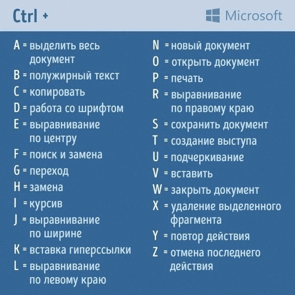

Progs HotKeys & Info
Progs HotKeys & Info
| VS Code - Keys | |
|---|---|
| Alt + ↑ / ↓ | Move Line - up/down |
| Alt + Shift + ↑ / ↓ | Copy Line - up/down |
| Ctrl + Delete | Delete Line |
| Ctrl + / | Line comment - ON/OFF (Знак / левее Shift) |
| Alt + Shift + A | Block comment - ON/OFF |
| Ctrl + \ | Split Editor |
| Ctrl + F4 | Close splited part of Editor / Editor |
| Alt + Shift + 1 | Toggle Split Editor ( horizontal / vertical ) |
| Ctrl + S | Save this File |
| Ctrl + Alt + S | Save all Files |
| Ctrl + Tab | Open next File |
| Ctrl + Shift + Tab | Open previous File |
| Tab | Select code lines and press Tab for move to right |
| Shift + Tab | Select code lines and press Shift + Tab for move to left |
| Emmet - Keys | |
| Tab | Expand Tag |
| View in Browser - Keys | |
| Ctrl + F1 | View in Browser |
| CSS Peek - Keys | |
| F12 | Open tab with CSS File - in definition's place |
| Alt + F12 | Open definition's place in new below half-window |
| Ctrl + Hover | Open definition in new pop-up window |
| Ctrl + Click | Open tab with CSS File - in definition's place |

| Алиасы (если созданы юзером) | |
|---|---|
| co | checkout |
| ci | commit |
| st | status |
| br | branch |
| hist | history |
| Управляющие клавиши во время выполнения команды | |
| h | help |
| q | exit |
| z | forward one window |
| w | backward one window |
| ESC SPACE | forward one window, but don't stop when EOF |
| r | repaint screen |
| Клонирование репозитория | |
| git clone https//github.com /%username%/%reponame%.git | Команда в каталоге куда клонируется каталог из origin |
| Создание репозитория | |
| git init | Инициализировать новый репо (в каталоге создаваемого репо) |
| git add name.ext | Добавить в список готовых к коммиту файл name.ext |
| git add . | Добавить в список готовых к коммиту все файлы |
| git commit -m "comment" git ci -m "comment" | Сделать коммит - т.е добавить файлы в локальный репозиторий. Камент обязателен!!! |
| git tag v_1.0 | Можно добавить к коммиту таг - т.е метку |
| git diff | После редактирования можно проверить что изменилось в еще не подготовленных к коммиту файлах (т.е до git add) |
| git diff --staged | После редактирования можно проверить что изменилось в уже подготовленных к коммиту файлах (т.е после git add) |
| git log --decorate | Показывает коммиты и где HEAD |
| Операции отмены | |
| git rm file.ext | Удалить файл из отслеживаемых а также из каталога |
| git rm --cached file.ext | Удалить файл из отслеживаемых но оставить его в каталоге |
| git checkout -- file.ext git co -- file.ext | Отменить изменения в файле сделанные до команды add (при этом изменения восстановить невозможно) |
| git reset HEAD name.ext | Отменить команду add для файла |
| git mv old_name.ext new_name.ext | Переименовать файл |
| Создание ветки | |
| git branch branch-name git br branch-name | Создать новую ветку branch-name, но переключения HEAD на нее не происходит |
| git checkout branch-name git co branch-name | Переключить HEAD на ветку branch-name, ФАЙЛЫ В РАБОЧЕМ КАТАЛОГЕ ПОМЕНЯЮТСЯ (если эти файлы сохранены в репо в разных ветках) |
| git merge branch-name | Слить ветку branch-name с веткой master. Если была еще ветка, слияние ее не затронет |
| git branch -d branch-name git br -d branch-name | Удалить ветку branch-name (HEAD = kk3.2) |
 Компас 3D - Hot Keys
Компас 3D - Hot Keys
| В чертеже или эскизе | |
|---|---|
| Геометрия | |
| O | Отрезок |
| L | Линия - последовательность отрезков и дуг |
| Alt + L | Непрерывный ввод - последовательность отрезков, дуг, сплайнов |
| C | Окружность |
| Alt + K | Прямая на произвольный угол |
| Alt + P | Прямая параллельная отрезку |
| Alt + G | Прямая горизонтальная |
| Alt + V | Прямая вертикальная |
| D | Линейный размер (Dimension) |
| Редактирование | |
| Alt + A | Деформация сдвигом указываемых объектов |
| Alt + C | Копирование выделенных объектов (Copy) |
| Alt + M | Перемещение выделенных объектов (Move) |
| Alt + R | Поворот выделенных объектов (Rotate) |
| Alt + T | Удлиннить до ближайшего объекта |
| Alt + S | Усечь участок кривой по границе объектов |
| Alt + Z | Выровнять объекты по границе |
| Управление документом и интерфейсом | |
| X | Открыть/закрыть Окно Переменных |
| V | Создать новый вид на чертеже |
| В 3D сборке | |
| M | Переместить деталь |
| R | Повернуть деталь |

 - кнопки Выровнять позиции
- кнопки Выровнять позиции и к имеющимся ссылкам на 3D модели деталей и узлов добавить ссылки на созданные ранее чертежи деталей и узлов. Ссылка на чертеж должна быть сверху - для этого нажатием на кнопку со стрелкой перемещаем ее. При этом в столбце спецификации Формат появляется значение формата чертежа детали или узла. и в открывшемся диалоге к имеющейся ссылке на 3D модель добавляем ссылку на файл чертежа сборки. Включить опции Передавать изменения в документ и для сборки и для чертежа и выйти из диалога.
и к имеющимся ссылкам на 3D модели деталей и узлов добавить ссылки на созданные ранее чертежи деталей и узлов. Ссылка на чертеж должна быть сверху - для этого нажатием на кнопку со стрелкой перемещаем ее. При этом в столбце спецификации Формат появляется значение формата чертежа детали или узла. и в открывшемся диалоге к имеющейся ссылке на 3D модель добавляем ссылку на файл чертежа сборки. Включить опции Передавать изменения в документ и для сборки и для чертежа и выйти из диалога.
| В чертеже или эскизе | |
|---|---|
| Alt + K | Отрезок (Line) |
| Alt + K | Отрезок (Line) |


| Brackets - Keys | |
|---|---|
| Ctrl + E | Быстрое редактирование |
| Ctrl + K | Быстрая документация |
| Ctrl + D | Дублировать строку |
| Ctrl + G | Перейти к строке |
| Ctrl + Shift + D | Delete Line |
| Ctrl + Shift + ↑ / ↓ | Move Line - up/down |
| Ctrl + / | Line comment - ON/OFF |
| Ctrl + Shift + / | Block comment - ON/OFF |
| Ctrl + Pg Down | Next Document in List |
| Ctrl + Pg Up | Prev Document in List |
| Ctrl + Alt + H | Left panel show/hide |
| Ctrl + S | Save this File |
| Ctrl + Alt + S | Save all Files |
| HTML Format - Keys | |
| Alt + A | Anchor |
| Alt + P | Paragraph |
| Alt + H | H1 |
| Alt + Shift + H | h4 |
| Alt + S | Span |
| Alt + D | Div |
| Alt + T | Empty Tag |
| Emmet - Keys | |
| Tab | Expand Tag |
| Ctrl + Shift + A | Wrap with abbreviation |
Зачетная таблица кодов символов Unicode и для HTML - https://dev.w3.org/html5/html-author/charref. При наведении курсора на квадратик с символом и его аббревиатурой на квадратике кроме этого появляется код символа в десятичной и шестнадцатиричной системах а на всплывающей подсказке - его Unicode код.
При отсутствии интернета можно посмотреть оффлайн версию
Pol Banky © 2018